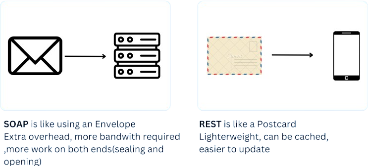

Tecnologías de Web APIs
Tecnologías de Web APIs
Definición de API
Las APIs permiten la comunicación entre diferentes sistemas de
software a través de protocolos bien definidos.
Actúa como una capa intermedia que procesa las transferencias
de datos entre sistemas, permitiendo a las empresas abrir sus datos y
funcionalidades de aplicaciones a desarrolladores externos, socios
comerciales y departamentos internos dentro de sus empresas

Tipos de APIs Web
-
Existen diferentes tipos de APIs, cada una para diferentes funciones.
- REST: Es la más utilizada por su simplicidad, basada en operaciones
HTTP como GET y POST.
Funciona con JSON y XML, pero JSON es el más utilizado por su ligereza. - SOAP: Aunque es un protocolo más complejo, sigue siendo ideal para transacciones
seguras como en banca y salud.
Usa XML para el intercambio de datos, lo que lo hace más pesado en comparación con REST.
- GraphQL: Desarrollado por Facebook, permite a los clientes solicitar solo los datos que necesitan,
reduciendo el consumo de ancho de banda.
Usa un único endpoint, en lugar de múltiples como en REST.
- gRPC: Creado por Google, se usa especialmente en
comunicaciones entre microservicios.
Permite comunicación bidireccional en tiempo real, ideal para aplicaciones que
requieren respuestas instantáneas.
Soporta múltiples lenguajes de programación, lo que facilita la integración en sistemas grandes y escalables.
Herramientas Populares
| Logo | Herramienta | Características | Ventajas | Desventajas |
|---|---|---|---|---|

|
Express.js | Minimalista, flexible, middleware robusto, enrutamiento HTTP | Rápido, flexible, gran comunidad | Estructura no impuesta (puede llevar a código desordenado) |

|
FastAPI | Rendimiento alto, tipado con Pydantic, documentación automática | Muy rápido, validación de datos integrada | Comunidad más pequeña que Django |

|
Spring Boot | Inyección de dependencias, auto-configuración, seguridad integrada | Robusto, maduro, ecosistema completo | Curva de aprendizaje pronunciada, verboso |

|
Postman | Cliente HTTP, colecciones de pruebas, generación de documentación | Interfaz intuitiva, colaboración en equipo | Limitaciones en la versión gratuita |